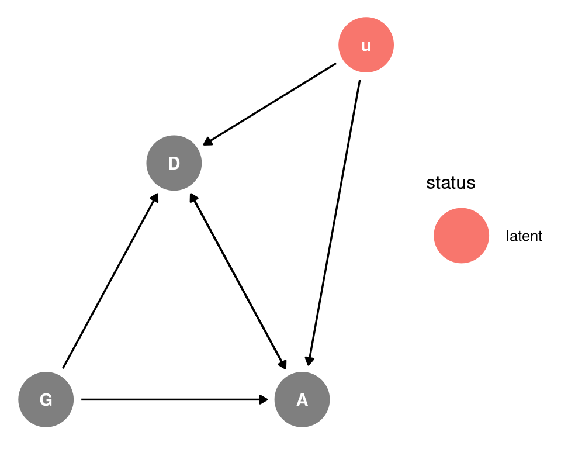
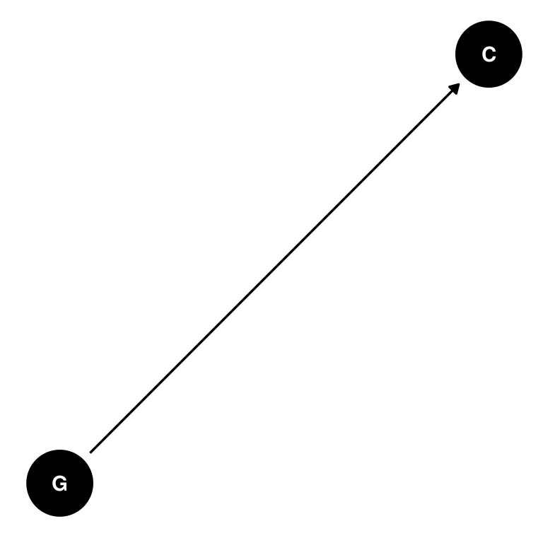
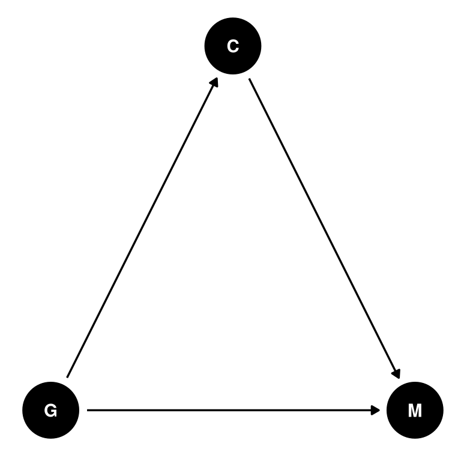
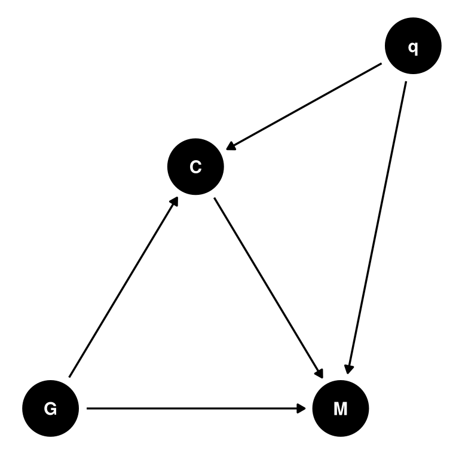
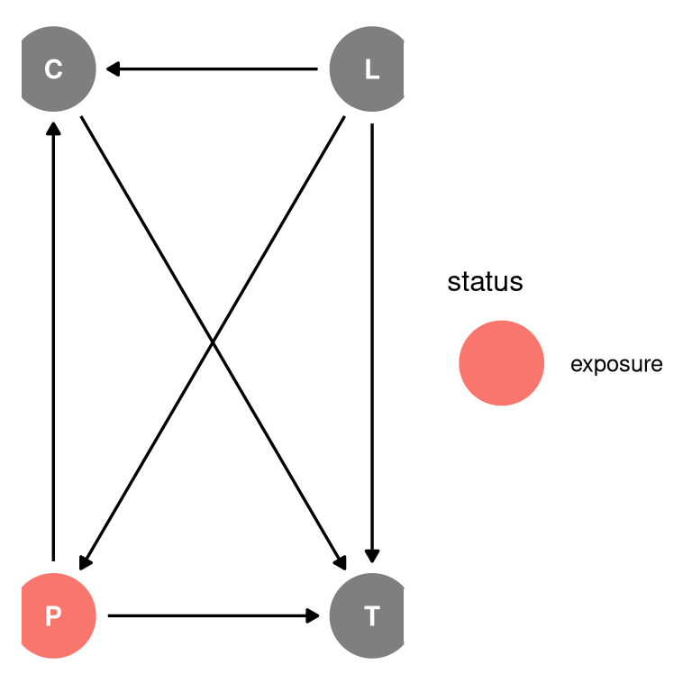
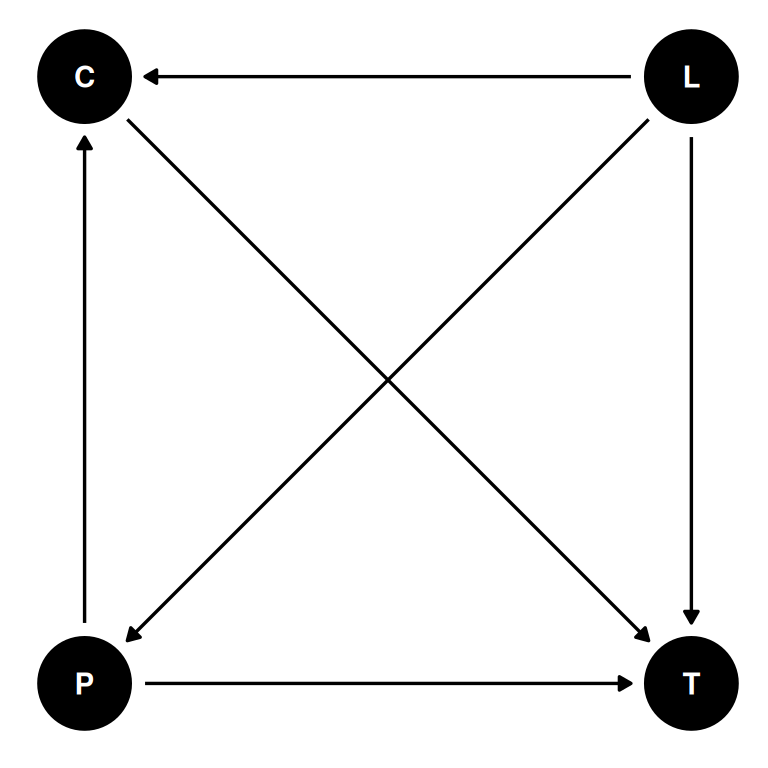
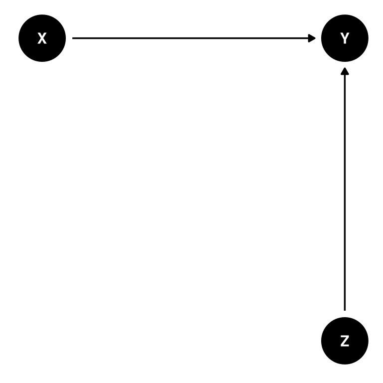
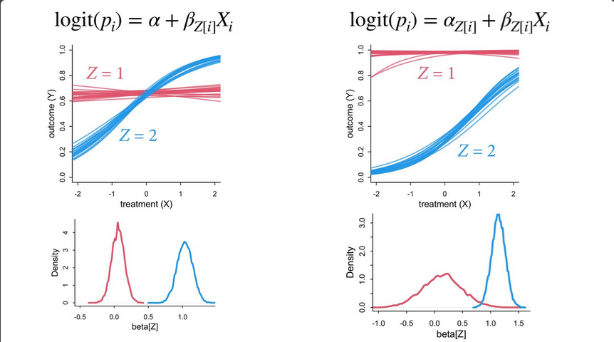

coords <- data.frame(
name = c('G', 'D', 'A', 'u'),
x = c(1, 2, 3, 3.5),
y = c(0, 1, 0, 1.5)
)Lecture 10 Notes
Counts
Recall: Generalized linear models have expected value as some function of an additive combination of parameters.
This means that a uniform change in predictor is not a uniform change in the prediction. And because of ceiling and floor effects, all predictor variables interact and moderate one another. Eg. if the outcome space is bounded between 0-1 and one variable pushed the outcome towards 1, another variable cannot push the outcome further to 1 - it is bounded by this ceiling.
Counts are distributions from constraints. Maximum entropy priors are counts include Binomial, Poisson and extensions of these. More event types include multinomial and categorical. Robust regressions include Beta-binomial, gamma-Poisson.
Example: confounded admissions
1. Estimand
Confounded admission rates with unobserved quality/hidden ability of the applicant
2. Generative model
dagify(
A ~ G + D + u,
D ~ G + A + u ,
coords = coords,
latent = 'u'
) |> ggdag_status(seed = 2) + theme_dag()
It is very unlikely that there are no common causes of department and
admission, the most common one is “ability”. Qualities of the candidate that are not easily observed or measured that influence which department they apply to and their admission rate (Unobserved u).
Simulate individuals of average ability and greater ability. For individuals of average ability, department 1 has no discrimination but department 2 discriminates against gender 1. For individuals of greater ability, department 1 has no discrimination and also department 2 has no discrimination (greater ability overcomes discrimination).
3. Statistical model
Total causal effect of gender. Do not stratify by department since this would block a pipe.
\(A_{i} \sim Bernoulli(p_{i})\)
\(logit(p_{i}) = \alpha[G_{i}]\)
\(\alpha = [\alpha_{1}, \alpha_{2}]\)
Direct causal effect of G. Stratify by department so we can separate the direct and indirect effect (this is a mediation analysis). This is going to be confounded by the common cause: ability.
\(A_{i} \sim Bernoulli(p_{i})\)
\(logit(p_{i}) = \alpha[G_{i}, D_{i}]\)
\(\alpha = \begin{bmatrix} \alpha_{1, 1} & \alpha_{1, 2} \\ \alpha_{2, 1} & \alpha_{2, 2}\end{bmatrix}\)
4. Analyze the simulation
Total effect shows disadvantage. Gender 1 has a lower probability of acceptance than gender 2.
Direct effect is confounded. Plot the posterior probability distribution of probabilities using inverse logit on departments by genders. The differences between simulated values and model outcomes are due to collider bias. Stratifying by department opens the non-causal path through u. We can estimate the total causal effect of gender, but we cannot estimate the direct effect of department or gender.
In this case, high ability gender 1 individuals apply to the discriminatory department anyway and since they have higher ability than gender 2 individuals in this simulation. Higher ability compensates for discrimination, masking the evidence in the admission records.
Example: National Academy of Science
Card et al 2022 found that women are advantaged conditional on citations and publications
Lerman et al 2022 found that elected women are cited less than men
More details here: Traag, V.A. and Waltman, L., 2022. Causal foundations of bias, disparity and fairness. arXiv preprint arXiv:2207.13665.
Lerman et al 2022
coords <- data.frame(
name = c('G', 'C', 'M', 'q'),
x = c(1, 2, 3, 3.5),
y = c(0, 1, 0, 1.5)
)dagify(
C ~ G,
coords = coords
) |> ggdag(seed = 2) + theme_dag()
Card et al 2022
dagify(
C ~ G,
M ~ C + G,
coords = coords
) |> ggdag(seed = 2) + theme_dag()
Combining the above two DAGs. Without defined causal assumptions, it is hard and potentially harmful to draw strong conclusions. A common cause of citations and membership is unmeasured qualities of the researcher. When proxies are used to quantify researcher quality, the proxy, eg. citations, is addressed instead of the underlying research quality.
- Lerman et al 2022: If men are less likely to be elected, then they must have higher q, C to compensate. By restricting to members, we have conditioned on a collider creating a ghost citation effect.
- Card et al 2022: Gender is the treatment and citations is the post treatment variable. In this case, the hidden quality bias is a collider on the path of G and q. If women are less likely to be cited, then women are more likely to be elected because they have higher quality than indicated by citations.
dagify(
C ~ G + q,
M ~ C + G + q,
coords = coords
) |> ggdag(seed = 2) + theme_dag()
No causes in, no causes out.
Do not design policy through collider bias.
Sensitivity analysis
What are the implications of what we don’t know?
Assuming the confound exists, model its consequences for different strengths and kinds of influence.
This helps us answer how strong must the confound be to change the conclusions?
coords <- data.frame(
name = c('G', 'D', 'A', 'u'),
x = c(1, 2, 3, 3.5),
y = c(0, 1, 0, 1.5)
)dagify(
A ~ G + D,
D ~ G + u,
A ~ u,
coords = coords
) |> ggdag(seed = 2, layout = 'auto') + theme_dag()\(A_{i} \sim Bernoulli(p_{i})\)
\(logit(p_{i}) = \alpha[G_{i}, D_{i}] + \beta_{G[i]} u_{i}\)
\((D_{i} == 2) \sim Bernoulli(q_{i})\)
\(logit(q_{i}) = \delta[G_{i}] + \gamma_{G[i]} u_{i}\)
\(u_{j} \sim Normal(0, 1)\)
We don’t know the u values, so we declare an unknown vector of length N with a normal 0, 1 distribution.
We would vary the confound strength over some range and show how results change, or vary other effects and estimate the confound strength. This can be especially helpful if you can know the upper limits of the potential confound and can model it’s strength at that limit.
Example: oceanic technology
How is technological complexity related to population size? To social structure (contact)?
coords <- data.frame(
name = c('P', 'T', 'C', 'L'),
x = c(1, 2, 1, 2),
y = c(0, 0, 1, 1)
)dagify(
P ~ L,
C ~ P + L,
T ~ P + L + C,
exposure = 'P',
coords = coords
) |> ggdag_status(seed = 2) + theme_dag()
Location is a confound, we will return to it later. Therefore, the results we produce today may be confounded by location.
We want to stratify by contact rate (high/low) to study the moderation effect.
Tool count is not binomial since there is no maximum. The maximum entropy distribution in this case is the Poisson distribution.
The link function for the poisson distribution is log. The poisson distribution takes the shape \(\lambda\).
\(Y_{i} \sim Poisson(\lambda_{i})\)
\(log(\lambda_{i}) = \alpha + \beta_{C_{i}} log(P_{i})\)
\(\alpha \sim Normal(3, 0.5)\)
\(\beta \sim Normal(0, 0.2)\)
The normal distribution with a mean of 3 and variance of 0.5 for alpha is weakly regularizing vs common defaults like normal 0, 10.
The logarithm of population is used because the background theory is that there is a diminishing return of increased population size.
Model criticism: Why would the intercept not be 0? 0 people = 0 tools. And why would the slopes of low contact and high contact cross over?
Two solutions:
- Use a robust model, in this case the gamma-Poisson (negative-binomial) distribution
- Use a principle scientific model
dagify(
P ~ L,
C ~ P + L,
T ~ P + L + C,
coords = coords
) |> ggdag(seed = 2) + theme_dag()
\(\Delta T = \alpha P^{\beta} - \gamma T\)
- \(\Delta T\): change in tools
- \(\alpha\): innovation rate
- \(P^{\beta}\): diminishing returns (elasticity)
- \(\gamma\): loss rate
\(\Delta T = \alpha_{C} P^{\beta_{C}} - \gamma T\)
This is a difference equation. How do tools change, not the expected number.
What is the equilibrium number of tools for different population sizes?
Solve for equilibrium T where \(\Delta T = 0\)
\(\hat{T} = \frac{\alpha_{C} P^{\beta_{C}}}{\gamma}\)
\(T_{i} \sim Poisson(\lambda_{i})\)
\(\lambda_{i} = \hat{T} = \frac{\alpha_{C} P^{\beta_{C}}}{\gamma}\)
The only trick is to constrain the parameters as positive. Either do it with exp() or use an appropriate prior (dexp()). Note probably use one or the other in the model but they are functionally equivalent.
Simpson’s paradox
Simpson’s paradox: reversal of an association when groups are combined or separated. No way to know which association (combined/separated) is correct without causal assumptions.
The UC Berkeley data showed women are admitted at a lower rate unconditional on department but, conditional on department, women are admitted slightly more. There is no way to know which is correct without assumptions. There is a potential mediator effect in department and there is a potential collider and confound in ability. Pipes, forks and colliders can all be called “Simpson’s paradox” but in order to understand them we need to think causally.
In non-linear models, we can get similar types of confounds arising from the ceiling and floor effects.
coords <- data.frame(
name = c('X', 'Y', 'Z'),
x = c(1, 2, 2),
y = c(0, 0, -1)
)dagify(
Y ~ X + Z,
coords = coords
) |> ggdag(seed = 2) + theme_dag()
Model with X
\(logit(p_{i}) = \alpha + \beta X_{i}\)
Model with X and different slopes for Z
\(logit(p_{i}) = \alpha + \beta_{Z} X_{i}\)
Model with X and different slopes and intercepts for Z
\(logit(p_{i}) = \alpha_{Z} + \beta_{Z} X_{i}\)
Cannot tell if the treatment X works since when Z = 1 is already at the maximum outcome.
